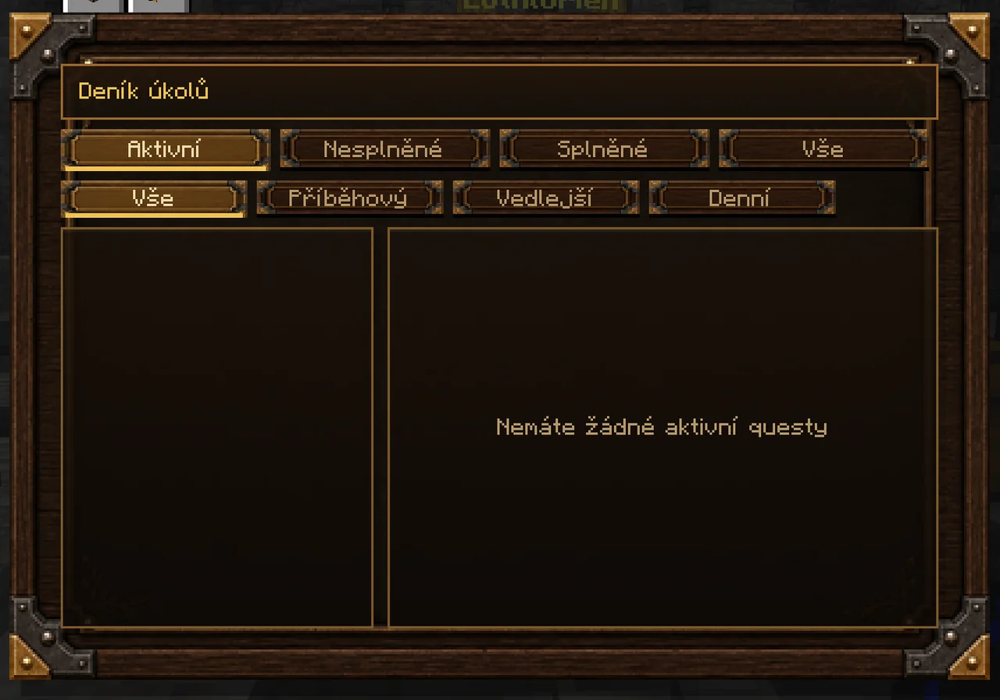
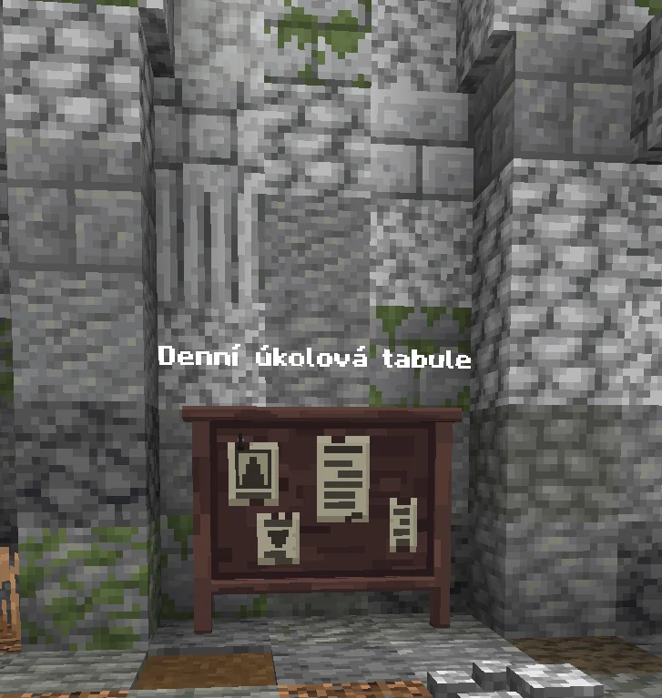

¶Questy
iBuď žebrák, nebo lord pevnosti s velkou armádou, na bitevním poli jsou si vždy rovni.
Prozkoumávej, pomáhej lidem v nouzi, braň nebo dobývej pevnosti a buduj svou pověst.
¶Typy questů
¶Denní
Menší quest, který splníš každý den. Ideální způsob, jak si pravidelně přivydělat.
¶Jednorázové
Menší úkoly, které splníš jen jednou. Odměna závisí na obtížnosti úkolu.
¶Kampaně
- Série několika úkolů složená z hlavních úkolů, jednorázových questů, denních úkolů nebo úloh.
- Odemykají nové mapy s vlastními questy.
- Obsáhlejší příběh s více možnostmi.
- Odměny se dělí podle kapitol kampaně.
¶Deník úkolů
V Deníku úkolů vidíš všechny své questy. Otevřeš ho klávesou L, záložkou s ikonou knihy nad inventářem nebo dlaždicí Úkoly v Rozcestníku.

- Horní záložky ukazují stav úkolů: Aktivní, Nesplněné, Splněné a Vše.
- Spodní záložky ukazují kategorii: Vše, Příběhový, Vedlejší a Denní.
- U úkolu uvidíš, jestli právě probíhá, je splněný nebo nesplněný.
- Když nemáš žádný aktivní quest, deník ti to napíše.
iDeník je vždy česky, včetně názvů předmětů v cílech. To platí od novějších verzí modpacku. Když máš starší verzi, aktualizuj ji.
![OVĚŘIT] Kterou verzi deníku a klávesu L používá ostrý server a zda už běží česká verze deníku.
¶Denní úkolová tabule
Na tabuli zakázek si každý den můžeš vyzvednout nový úkol.

- Klikni na tabuli a otevře se menu s pergameny. Klikem na pergamen otevřeš detail zakázky (odměna a cíl) a tlačítky Přijmout nebo Zpět se rozhodneš.
- Každý hráč dostane svou vlastní nabídku úkolů (výchozí jsou 3 papíry) a smí přijmout všechny. Každou zakázku splníš jednou za cyklus.
- Cyklus trvá 20 hodin reálného času.
- Přijaté denní zakázky se zapisují do Deníku úkolů v kategorii Denní.
- Za zakázku dostaneš Lucky Coin.
¶Lov hlav (PvP zakázka)
- Každý hráč v survivalu dostane na cyklus jednoho osobního cíle, jiného hráče. Jméno cíle vidíš jen ty.
- Zakázka vyžaduje aspoň 3 hráče na serveru a platí jen v dimenzi Středozemě. Počítá se jen přímé zabití.
- Za splněný lov dostaneš větší odměnu než za běžnou zakázku (3× Lucky Coin).
!Lov hlav je PvP. Ber to s rozmyslem, protože i ty můžeš být něčím cílem.
![OVĚŘIT] Kde přesně tabule stojí, jaké jsou skutečné odměny na ostrém serveru a zda tabule už běží v aktuální verzi (nová verze čeká na zkoušku).
¶Kampaně
¶Cech zlodějů
Staň se součástí hůrského podsvětí a prokopej si cestu až do Hůrské rady.
iKampaň začneš tím, že si promluvíš s Linharten v centru Hůrky.
¶Společenstvo Prstenu
U Gandalfa si můžeš zvolit: Začít kampaň, Vrátit se k rozdělanému úkolu, nebo po dokončení zvolit otevřený svět.
![OVĚŘIT] Kampaň je ve zkoušení a ještě nebyla ve hře ověřená. Do nasazení ji berte jako „připravuje se“.
¶Přehled úkolů
![OVĚŘIT] Seznam je převzatý z původní wiki. Zda všechna NPC a úkoly stále existují, majitel nepotvrdil.
¶Jednorázové questy
| Zadavatel | Zadání |
|---|---|
| Erik | Přinést bylinky od Phany |
| Erik | Vybít goblinský gang |
| Knedlík Podkořen | Vymést tábor Númenorejců |
| Knedlík Podkořen | Vymést tábor bažinových oblud |
¶Denní questy
| Zadavatel | Zadání |
|---|---|
| Daot | Uklidnit Šílenou Matyldu |
| Bermond (Cech) | Likvidace špehů |
| Breník (Cech) | Vyzvednout list Starého Tobyho |
| Hrimbulf (Cech) | Vyzvednout vercajk na perk |
| Nagrath (Cech) | Projít 3 lokace po Hůrce |
| Tharion | Ulovit zvířata 1500 m na jih od Hůrky |
| Líriel | Doručit dopis do Old Cardolanu |
| Ječmínek Máselník | Doručit 1 sud piva |
| Wilhelm Zelený | Vyhnat škůdce z farmy |
| Cecil | Procestovat Rivendell, Mordor Mountains a White Mountains |
| Phana | Zabít 15 červotočů severozápadně od Hůrky |
| Rytíř | Porazit rytíře |
| Uriel | Zabít prokleté enty |
¶Problémy s questy
iNarazil jsi na chybu v questu? Napiš Admin Teamu do ticketu na Discordu.
© Všechna práva vyhrazena tvůrcům módů, naším výtvorem je pouze zprostředkování serveru. Nejedná se o oficiální produkt Minecraftu. Nejsme spojeni s Mojang Studios.